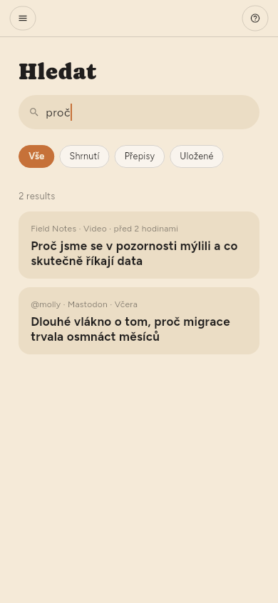
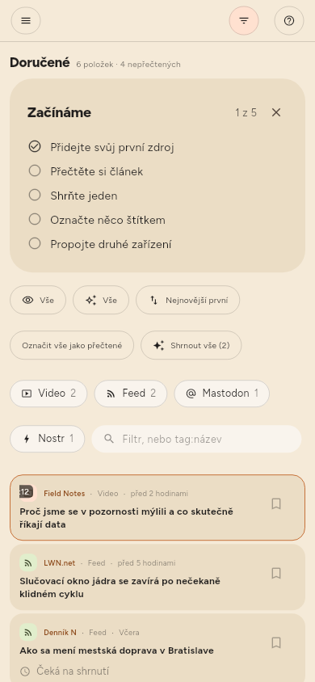

← Shrnutí · Obsah · Uchovávání →
Hledání
Hledat v polici, nebo /.
Hledání prochází názvy, text článků a přepisy videí. Nález v přepisu je okamžik — uvádí čas a po otevření na něj přeskočí. Položku bez názvu najdete podle její adresy.

Textové pole v panelu filtrů je něco jiného: zužuje seznam před vámi, místo aby otevíralo vlastní výsledky. Hledá v názvu, v názvu zdroje a ve shrnutí — Hledat čte navíc text článků a přepisy.

Každý filtr se ptá celé knihovny, ne jen části na obrazovce. Slovo, štítek, Nepřečtené, Neshrnuté, kanál, druh: na každý odpovídá úložiště, takže číslo nad seznamem je počet věcí, které skutečně existují. tag:linux najde vše s tímto štítkem bez ohledu na stáří; dva štítky zužují, ne rozšiřují, a hodnota s mezerou patří do uvozovek: tag:"machine learning".
Štítky (jen Premium)
Štítky článku jsou témata, která vybralo jeho shrnutí, a můžete je měnit: čipy pod nadpisem ve čtečce štítky přidávají a odebírají a kliknutím na jeden uvidíte vše, co ho nese.
Štítek může mít i zdroj, v jeho panelu — a článek se filtruje podle štítků svého zdroje i podle vlastních, takže štítek na kanálu uspořádá sto článků, které v něm už jsou, ne jen ty, které přijdou příště.
Každý používaný štítek je v polici pod Tags, s tím, co obsahuje. Kliknutí na štítek zúží seznam; další kliknutí zúžení zruší.